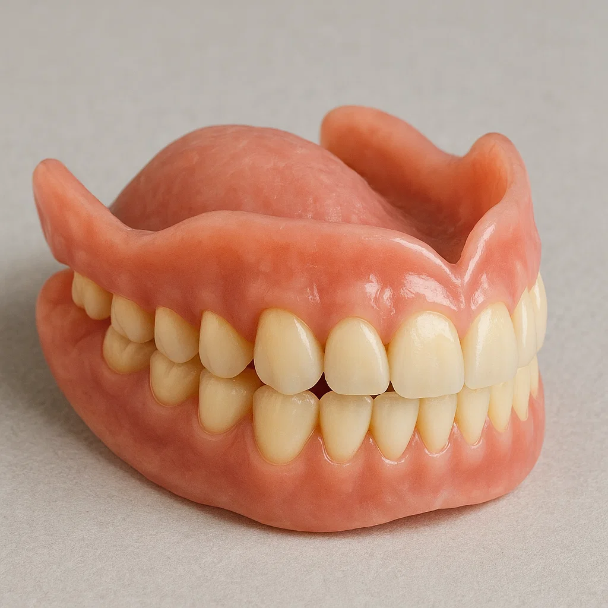

Протетика
Какво представлява протетичната стоматология
Протетичната стоматология (протетика) се занимава с възстановяване на зъбите при големи разрушения или при липса на зъби. Тя включва изработката на постоянни конструкции като коронки и мостове, както и подвижни протези – всички те заместват дефекти, които не могат да се лекуват с обикновени пломби. Целта е да се възстанови нормалната форма, функция и естетика на усмивката. Протезирането се извършва в колаборация с висококвалифицирани зъботехници – стоматологът първо изпилява зъба (или взема отпечатък), а техникът изработва коронката, моста или протезата по индивидуалния модел на пациента.
Видове зъбни протези
За единични или малки разрушения често се използват металокерамични или чисто керамични корони. Коронката обхваща цялата коронка на зъба и му придава нова форма и цвят. При липса на няколко съседни зъба може да се изработи мостова конструкция – тя представлява две или повече корони, свързани помежду си, като крайните корони се закрепват върху естествените съседни зъби. Когато липсват по-големи участъци от зъбния ред или се търси по-удобно решение, се използват подвижни протези. Частичната протеза замества няколко липсващи зъба и се прикрепя към останалите с метални куки или защипвания, а тоталната (пълна) протеза възстановява цялата дъга зъби при липса на всички зъби. Всички конструкции се изработват по индивидуални отпечатъци, така че да паснат плътно и да изглеждат естествено.
Как протича изработването на протеза
Първо се прави подробен преглед – стоматологът проверява зъбите и венците, прави рентгенова снимка и взема отпечатък от челюстите. За корона или мост зъбите, върху които ще стъпва конструкцията, се изпиляват, за да се освободи място. След това с подходящ материал се взема отново отпечатък и той се изпраща в зъботехническата лаборатория. В лабораторията техникът изработва восъчен или пластмасов модел и по него изковава металната (или безметална) рамка на коронката или моста. После върху рамката се нанасят слоеве керамика или цирконий, които се изпичат до готови корони. В следващо посещение стоматологът пробва готовата конструкция в устата – проверява захапката и удобството, след което я фиксира с цимент. При изработка на подвижна протеза стоматологът помага при избора на вид и цвят на изкуствените зъби, а след готовата протеза се правят адаптации (fit-интервю) за удобство при говорене и дъвчене. Обикновено целият процес минава през няколко влизания и отнема няколко седмици, като краен резултат е стабилна, естественовидна конструкция за Вашата усмивка.
Ползи от протетичните услуги
Зъбните корони, мостове и протези възстановяват пълната функция на зъбите – помагат Ви да дъвчете храна правилно и да говорите ясно. Те предпазват и здравите останали зъби от излишно натоварване и предотвратяват тяхното разместване, което често се случва при празни пространства. Подобрената естетика също е голямо предимство – коронките и фасетите могат да пресъздадат естествен външен вид, правейки усмивката Ви красива и самоуверена. Възстановените зъби помагат за запазване на структурата на челюстната кост – по този начин се избягва нейното стягане (резорбция), което настъпва при дълга липса на зъб. С правилно поддържана орална хигиена протетичните конструкции могат да Ви служат дългосрочно, осигурявайки стабилно и комфортно решение за дългосрочното Ви усмихване.